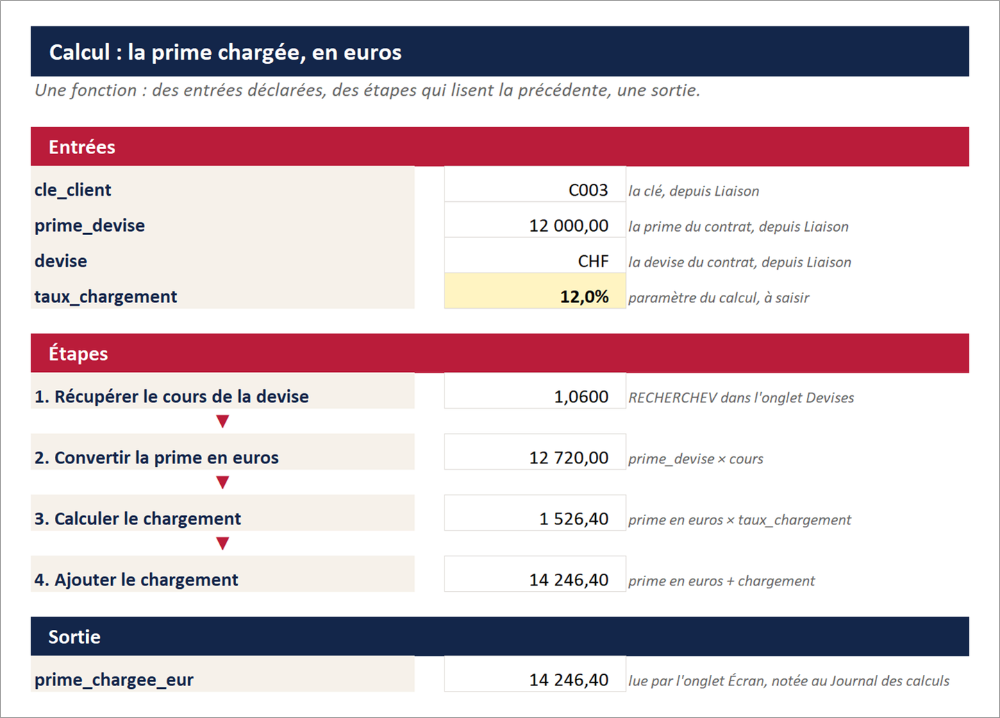
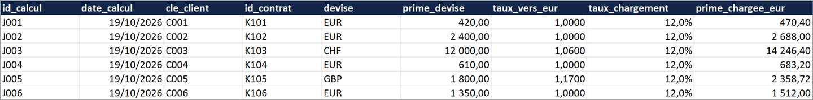
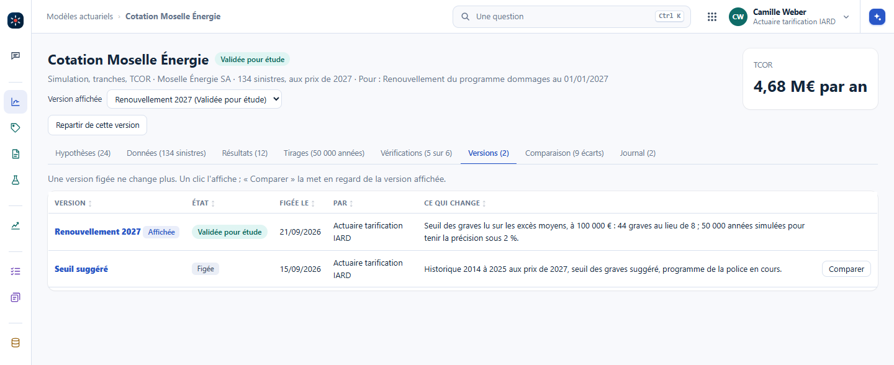
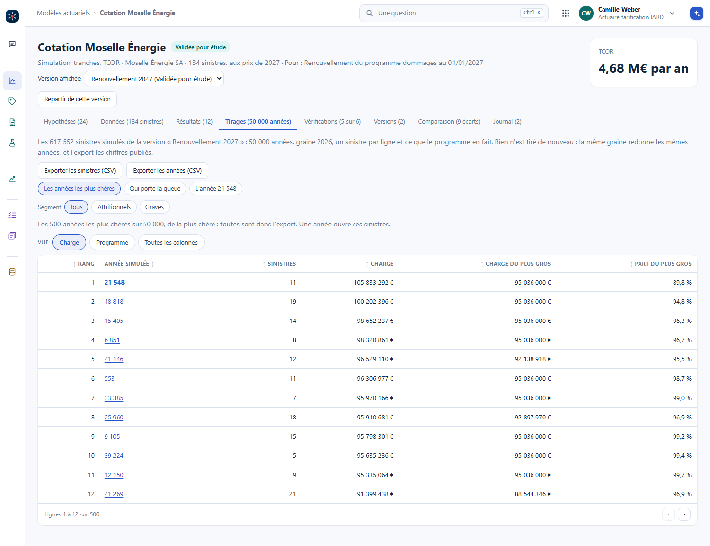

Le back-end est toujours structuré en base de données. Le calcul, lui, peut se faire d'un côté ou de l'autre selon sa complexité, et il n'y a pas de bonne réponse unique. Mais un calcul complexe va très souvent côté back-end, dans l'API : vue de l'interface, c'est une fonction, et elle peut cacher des choses très complexes.
On a une série de dix, cent nombres ou plus. Calibrer, c'est trouver les paramètres d'une loi actuarielle sur ces données d'apprentissage : la loi de coût des sinistres, la loi de rachat. C'est un calcul complexe, avec ses choix et ses contrôles : il va dans le back. L'interface envoie la série et reçoit les paramètres, avec de quoi juger l'ajustement.
La méthode elle-même se versionne : le maximum de vraisemblance et la méthode des moments ne donnent pas les mêmes paramètres sur la même série. On garde les deux, on compare leurs résultats, et tout se stocke.
Les entrées restent structurées. Plutôt qu'une formule très longue, un onglet de calcul intermédiaire montre exactement chaque étape. Il est lui aussi structuré et indépendant, avec ses entrées et sa sortie déclarées : c'est exactement une fonction, ce qu'on écrirait en Python avec def. Dans Excel, on peut le montrer joliment avec des flèches : les entrées, une flèche, récupérer la devise, une flèche, récupérer le cours, et à la fin le résultat. Un autre onglet garde proprement les entrées et la sortie de chaque calcul fait.


Chaque onglet a un objectif précis, et il y en a trois sortes : les données, le calcul, l'affichage. Dans le classeur d'exemple, Clients, Contrats et Devises sont les données ; Liaison et Calcul, le calcul ; Écran, l'affichage. C'est ainsi que se développent les logiciels complexes : base de données, API, interface. Le chapitre Construire un outil actuariel le montre sur une vraie application, avec qui tient chaque couche et comment on la vérifie.
Recalculer à la volée ou stocker, c'est une décision. Mais stocker vaut mieux, pour la traçabilité, et c'est l'esprit de Solvabilité II : le calcul a été fait à telle date, sur telles données, avec telle graine. Mêmes entrées et même graine : exactement le même résultat, à n'importe quel moment. Le chapitre Versionner les résultats en donne la forme, une ligne par exécution.
Même les résultats d'un Monte-Carlo se stockent : le stockage ne coûte presque plus rien. C'est aussi une question de latence : on ne peut pas régénérer tous les scénarios à chaque demande. On prépare le terrain, on simule ce qui est habituel, on stocke tout, et la distribution se donne tout de suite.
L'atelier des modèles tient cette discipline. Une version figée garde ses paramètres, son résumé chiffré et l'empreinte de ses données ; elle ne change plus. Quand la fonction actuarielle la valide, l'atelier la recalcule d'abord, et refuse avec « Les chiffres ne se retrouvent pas » si le recalcul diffère du résumé figé. Le moteur de simulation exige une graine : sans elle, il s'arrête sur une erreur.
Pour la cotation livrée, 50 000 années simulées avec la graine 2026, Vision garde le résumé et de quoi retirer exactement les mêmes années. La table longue des sinistres simulés se refait à l'ouverture de l'onglet Tirages, en vérifiant que la charge moyenne retrouvée est celle du calcul, et s'exporte en CSV. Les deux voies tiennent la même promesse : le même chiffre, à n'importe quel moment. Dans l'ALM, les calculs R1 et R2 gardent de même leur graine et les versions des modèles qu'ils emploient.


Dans Vision : #/modeles/cotation-moselle?ong=versions, au poste d'actuaire tarification IARD, puis l'onglet Tirages.
Pourquoi imposer une graine, plutôt que de laisser le générateur partir de l'horloge ?
Sans graine, deux lancements donnent deux chiffres, et personne ne peut dire si un écart vient d'une hypothèse ou du hasard. Avec elle, le même calcul redonne le même chiffre : le validateur le recalcule et le retrouve, l'auditeur le rejoue un an plus tard, et deux variantes sur la même graine isolent l'effet de l'hypothèse qui change. La graine ne rend pas le calcul plus juste ; elle le rend vérifiable.
On stocke le résumé d'une version et sa graine, pas la table longue des sinistres simulés. Est-ce assez pour la traçabilité ?
Oui, à une condition : que le code qui retire les années soit lui aussi figé, avec sa version. Mêmes données, même graine, même code : la table revient à l'identique, et Vision le vérifie sur la charge moyenne. Si le code peut changer, il faut stocker la table, ou au moins les quantiles publiés.
L'IA générative est presque un prétexte. Il s'agit d'utiliser sa puissance pour revoir le métier d'actuaire : ranger les données, séparer le calcul de l'affichage, garder chaque résultat. Tout cela pourrait se dire sans IA générative, mais ce serait plus difficile à faire. Et si on le dit bien à l'IA, ce sera bien fait.